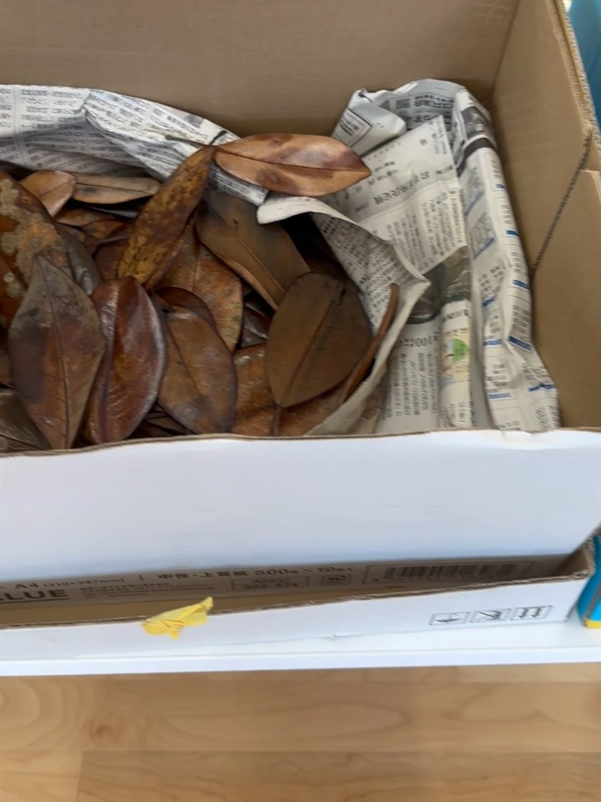
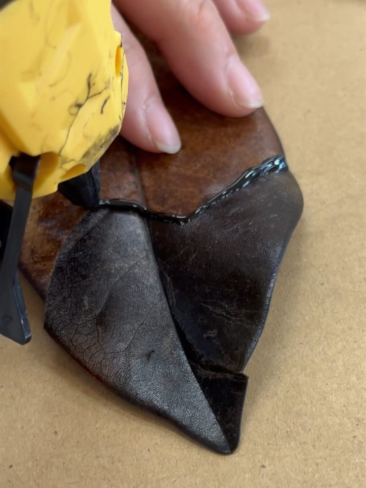
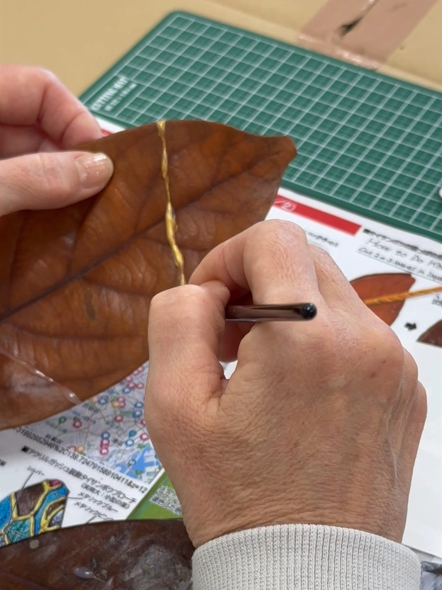
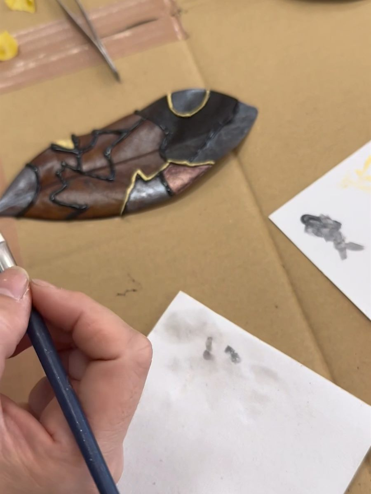
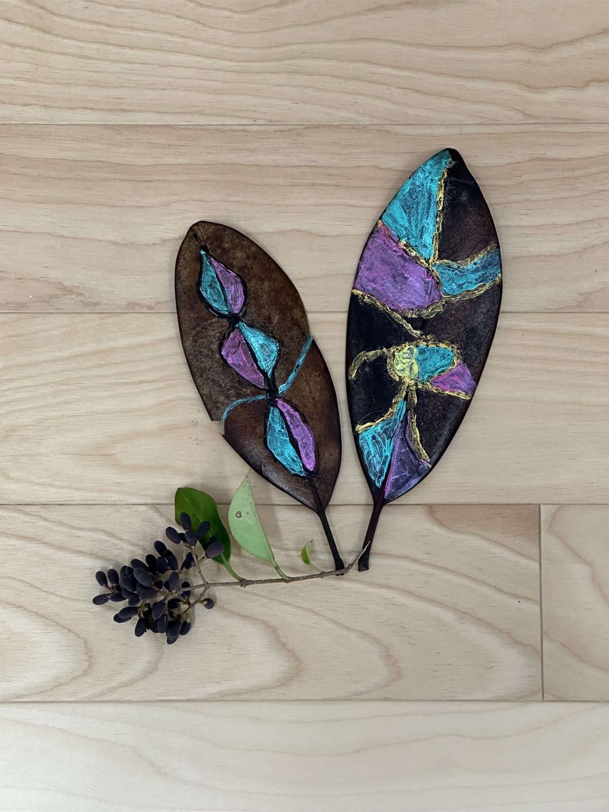
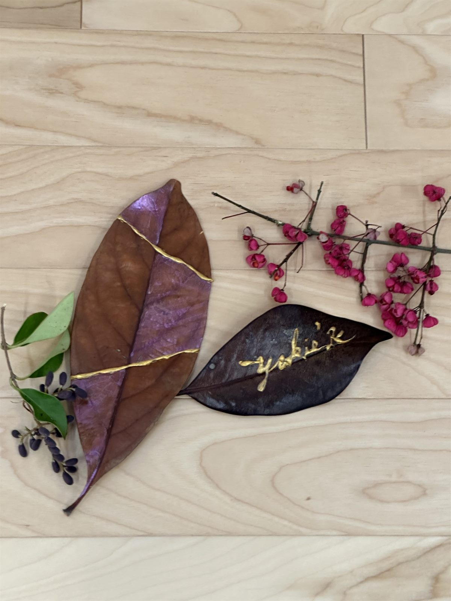
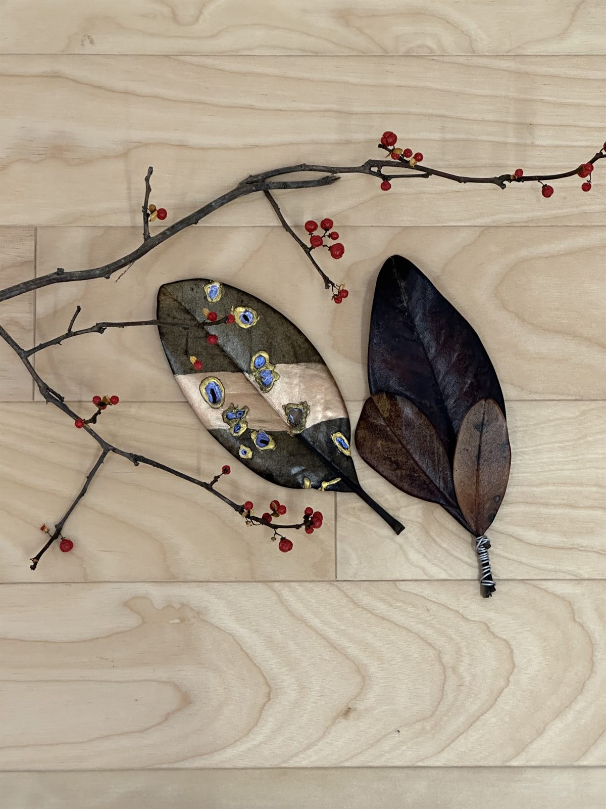
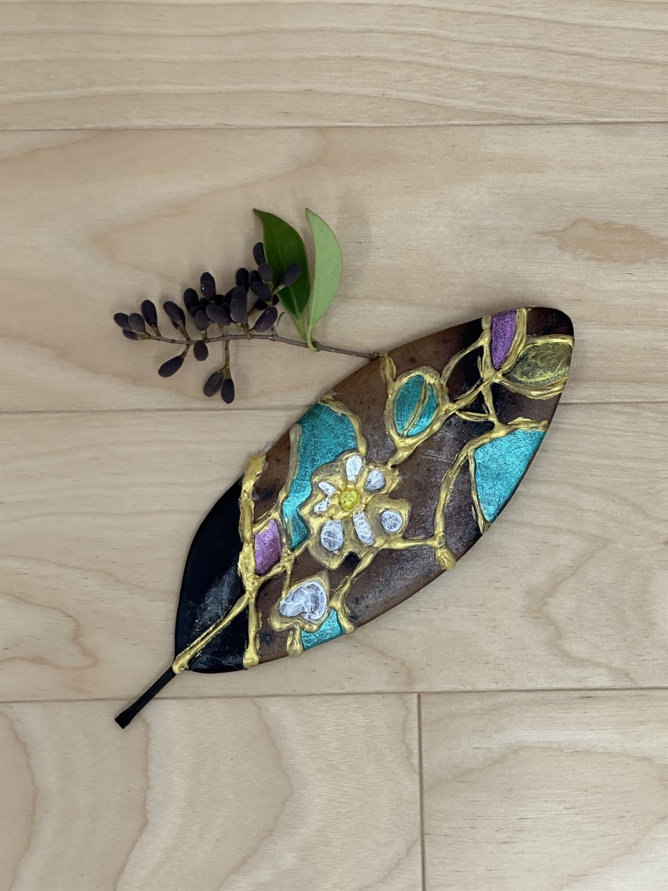
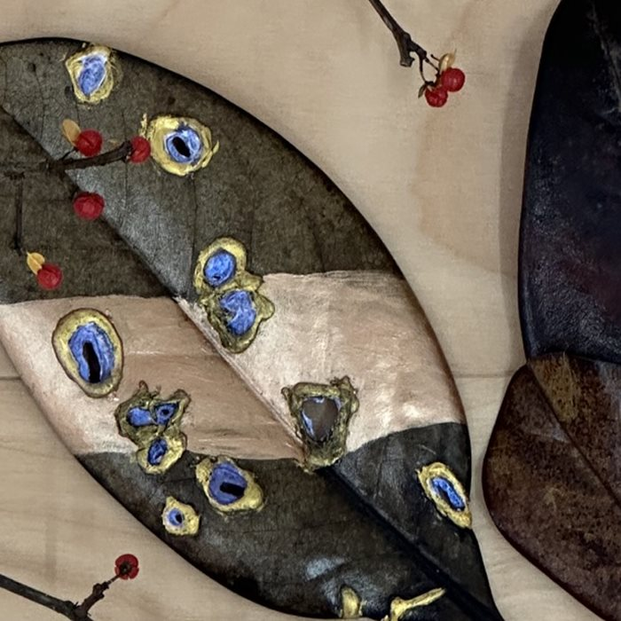

開催概要
| 日時 | 11月14日(土) 10:00〜12:00（開催済み） |
|---|---|
| 場所 | 都南老人福祉センター |
| 内容 | グリセリンで処理したタイサンボクの落ち葉で、葉っぱの金継ぎに取り組みました。作品はお持ち帰りいただきました。 |
| 対象 | 岩手県内在住の方 |
| 定員 | 20人（抽選） |
| 費用 | 1,000円（材料費等） |
| 問い合わせ | 都南つどいの森 019-637-0877 |
※ このワークショップは終了しています。ご参加のみなさま、お疲れさまでした。
当日の様子
会場には、グリセリン溶液で下処理したタイサンボクの落ち葉を箱で用意しました。葉を選び、切って貼り合わせ、継ぎ目に金の線を描いて、色を塗る。この順に進めました。当日の様子は、下の動画でご覧いただけます。その下の写真は、この動画から切り出したものです。
当日の動画。YouTubeで開く →




作り方とコツは、コラムで
グリセリン溶液のつくり方、貼り合わせに使う接着剤のちがい、絵の具の選び方、きれいに仕上げる5つのコツをまとめています。
できあがった作品
同じタイサンボクの葉から、線の引き方と色の選び方で、これだけちがう作品ができました。多くの作品で、塗らずに葉の地の茶色を残しています。考案者のカメさん（川村晃寛さん）が「特に重要」と挙げる、きれいに仕上げるコツのひとつです。写真をクリックすると大きく表示されます。





割れ目を、見どころにする
金継ぎは、割れたり欠けたりした器を漆でつなぎ、継ぎ目を金粉で仕上げる修理の技法です。継ぎ目を隠さずに、器の新しい見どころとして見せるところに特徴があります。茶の湯では、器の見どころを景色と呼んできました。
葉っぱの金継ぎでも、葉を切って継いだ線を、金で描き起こします。今回の作品には、葉にあいた小さな穴をひとつずつ金で縁取ったものもありました。傷を隠さずに見せる、金継ぎの考え方がそのまま表れた一枚です。

なぜグリセリンに漬けるのか
乾いた落ち葉がパリパリと割れやすいのは、葉の中の水分が抜けているからです。グリセリンは水によく混ざり、ほとんど蒸発しない液体です。溶液に漬けた葉には中までグリセリンがしみ込み、乾かしたあとも抜けずに残ります。グリセリンには空気中の水分を引き寄せる性質もあるので、葉はしなやかさを保ちます。カッターで切っても割れが走りにくいのは、このためです。